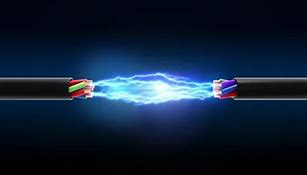

Corriente Eléctrica
La corriente eléctrica es el flujo de carga eléctrica a través de un material conductor.
Este flujo es generalmente de electrones, que se mueven debido a una diferencia de potencial eléctrico (voltaje) aplicada en los extremos del conductor.
Conceptos Clave
- Intensidad de Corriente: Es la cantidad de carga que pasa por un punto del conductor por unidad de tiempo. Se mide en amperios (A) y miliamperios (mA).
- Tipos de Corriente:
- Corriente Continua (CC): El flujo de carga es constante y en una sola dirección.
- Corriente Alterna (CA): El flujo de carga cambia de dirección periódicamente.
Efectos de la Corriente Eléctrica
- Calentamiento: La corriente produce calor cuando pasa a través de un conductor, lo que se utiliza en dispositivos como las bombillas incandescentes.
- Efectos Magnéticos: La corriente genera un campo magnético alrededor del conductor, lo que se aprovecha en electroimanes.
La relación entre:
Corriente (I), Voltaje (V), y Resistencia (R) se describe mediante la ley de Ohm.
